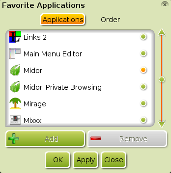
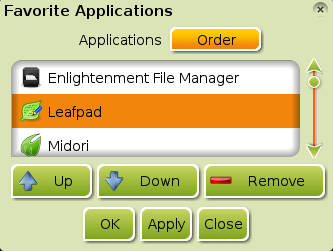
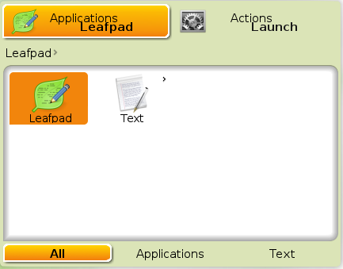
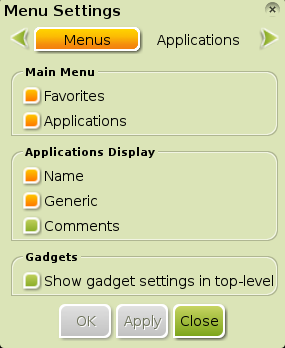

[click on any image to enlarge]
This is a beginners Introduction to customizing Bodhi Linux's Menus. It was created and tested for Bodhi Linux versions 1.0.0 through 1.2.0. The current revision was made to cover changes implemented in Bodhi Linux versions 2.0 through 2.2.0.- Favorite Applications
- Customizing Bodhi Linux's Menu
- Enlightenment's Menu Settings
- Further Information
Favorite Applications
You can add apps you use the most or otherwise want to access quickly to the Favorites Menu. This list of favorite applications can be found in either Bodhi Linux's Main Menu or by right clicking any unoccupied spot on the desktop. On a default installation of Bodhi Linux, the Favorites option will not show up in the Main Menu nor will right-click open the Favorites Menu. This is because no applications are added to the favorites list by default — it is the philosophy of Bodhi Linux not to try to second guess what the user wants and to keep things minimal and let the users decide what they want themselves.

Ex. Adding LXTerminal to Favorites
There are two methods of adding an application to the Favorites Menu. For the first method, launch the application you wish to add, say LXTerminal, the default terminal-emulator for Bodhi Linux. Right-click the application window's border (title bar) at the top. This will open a menu. Mouse over the application's name, then select the Add to Favorites Menu option (with the icon representing a bookmark), as depicted in the image. LXTerminal will now appear in your Favorites Menu. Incredibly simple and truly elegant!
 The second method is pretty easy, too, just has a few more steps. From Bodhi Linux's Main Menu, choose Settings>All>Apps>Favorite Applications. This launches E17's Favorite Applications window. Under the Applications tab, scroll down the list until you find the application you wish to add, click it to highlight it and then click the Add button. An indicator (in the case of the image, an orange fill-in) will appear beside the application's name as depicted in the image for Midori. Click Apply and then OK. The application will now be added to your Favorites list and appear in the Favorites menus.
{kind=link}
Note:
The indicator varies from theme to theme. A blue dot is the indicator in the Default theme, and, thus, the most common.)
 To remove an application from the Favorites Menu, launch the Favorite Applications window as above. Go to the Order tab. Find the application you wish to remove, click it to highlight it and then click the Remove button. Now click Apply and then OK. The application is now removed from your Favorites Menu.
{kind=link}
If you are an avid user of the Favorites Menu and frequently use a lot of applications, you may find your Favorites Menu becomes rather long and you may desire a different order, perhaps placing the apps you access most often at the top of the list. Naturally, E17 provides a way to change the order of the applications in the list. Again launch E17's Favorite Applications, and once again click on the Order tab, as pictured in the image above. Find the application you wish to move, click it to highlight it. Now click either the Up or Down buttons to position it where you wish it to be in the menu. If desired, you can do the same for one or more other applications. Once the desired order is created, click Apply and then OK.
Customizing Bodhi Linux's Menu
E17 has a rather unique approach to task of editing, adding or removing menu items. Instead of offering a separate application to change menu items, the ability to graphically edit a menu item is incorporated into E17 itself. To see how, let's examine the process to add an application to the Main Menu.
Adding an Application
There are a couple of occasions where you may need to manually add an application to the Main Menu. The most common case is for most command-line apps, as they do not usually need to have menu entries. More rarely, you may install an application with a graphical user interface which does not appear in the menu, probably due to how the application was packaged. However, this should rarely happen, so we will discuss it second, and first focus on adding a command-line app, which is much more common. The example we will use is nano, a simple editor for use in terminals.
First, we will add a menu entry for nano, which is done by creating a .desktop file(launcher) for it. Go to Main Menu>Settings>All>Apps>Personal Application Launchers. Select Add, which will open the Desktop Entry Editor window, and fill in the following:
The Basic Tab
- Name: Nano (the name you want to appear in the Menu)
- Comment: Command-line text-editor (this can be anything you like)
- Application: nano (command used to launch the app in a terminal)
- Name: Nano (the name you want to appear in the Menu)
The Icon Tab
- Icon: If you know the name of the icon you want to use from the icon-set you are currently using, you can simply enter it here.
However, if you want to select your own image, click on the empty square.
This will open the Select an Icon window. There, you can navigate to and select the image you wish to use.
For now, just type text-editor for the default text-editor
image of your icon-set.
- Icon: If you know the name of the icon you want to use from the icon-set you are currently using, you can simply enter it here.
However, if you want to select your own image, click on the empty square.
This will open the Select an Icon window. There, you can navigate to and select the image you wish to use.
For now, just type text-editor for the default text-editor
image of your icon-set.
The General Tab
- Generic name: Editor
- Categories: Utility;Editor;
- MIME Type: text/plain;
- Generic name: Editor
The Options Tab
- Check "Run in Terminal" and "Show in Menus".
- Check "Run in Terminal" and "Show in Menus".
When you finish making the entries, click Apply, then Close. This creates a .desktop file for nano located in /.local/share/applications of your home directory, which gives instructions to be seen in the Menus and run in a terminal when clicked. Now Nano will be in the menu under Accessories. (You may have to select Restart from Main Menu>Enlightenment to refresh Enlightenment and see any changes ASAP.)
Now let's discuss how to add an app that has a graphical user interface. First, we need to open the app. For our example, we will use Leafpad, the very simple, graphical text-editor that comes installed in Bodhi Linux (this is already read in the main menu; we are just going through the motions as an example). There are three or more different ways you open the app, even if the app doesn't appear in the Main Menu. You can launch the app from a terminal or find the file for the app and launch it by clicking on it. However, we will use the Everything module to open it:

First, we need to launch Run Everything.
It can be found in the Main Menu or launched by the key board shortcuts Alt+Esc,
Ctrl+Alt+Space, or Win+Space.
Once it launches, start typing 'Leafpad' and, as soon as it is displayed,
navigate to it with the arrow-keys and press enter to launch it.
Once Leafpad launches, right-click its window border (title bar) at the top.
Choose Leafpad>Edit Icon. A Desktop Entry
Editor window will pop up as pictured below:
{kind=link}
{kind=link}
Click on Options, and you will see that the option Show In Menus is selected. If you are adding an app which was not automatically added to the Main Menu, you can select the Show In Menus option, then click Apply and Close. Now, your app will appear in the Main Menu and other menus where it should be visible. (As mentioned above, you may have to select Restart in Main Menu>Enlightenment to see changes.)
Removing an Application
Now that you have seen how to use the Desktop Entry Editor it should be obvious how you remove an entry from the menu. Launch the application you wish to remove, right-click its window border (title bar), and choose [application-name]>Edit Icon. A Desktop Entry Editor window will pop up, click on Options and then uncheck Show In Menus and then click Apply and Close.
Enlightenment's Menu Settings

{kind=link}
There is, yet, one more tool for altering Bodhi Linux's menus in E17's settings to consider. This is the Menu Settings dialog, pictured to the right. To open this window, open the Main Menu and then choose Settings>All>Menus>Menu Settings.
The Menu Settings window has four tabs: Menus, Applications, Autoscroll, and Miscellaneous. The Menus tab is opened by default. This tab is divided into three subsections:
Main Menu
Checking or unchecking an entry here will either display or not display the selected sub-section in the Main Menu.Applications Display
Checking or unchecking an entry here changes the way an application is displayed in the E17 menus. You can choose to display an application's name, its generic name, and/or the app's comment. These entries are the same that appear in the Desktop Entry Editor and of course can be edited there if need be.Gadgets
This feature is deprecated and makes no difference whether checked or unchecked.
Note: To ensure that the changes are made after making any changes in the
Menu tab or any other tab of the Menu Settings window, be sure to click
Apply or the change will not be made.
Clicking the Applications tab in the Menu Setting window allows you to choose what menu source the system uses to display the Applications sub-menu. In a default installation of Bodhi Linux, the choices are Enlightenment and Lxde (Applications). The only difference is the xml file it uses to display the Applications menu; No noticable difference, since the end-result is the same.
The remaining two tabs, Autoscroll and Miscellaneous, allow you to tweak various aspects of how the E17 menus behave. The best way to see what these various settings do is to play with them.
Further Information
Some sub-menu items are sufficiently complex to warrant a separate article describing their use:
- Enlightenment Settings: An in-depth look at all the E17 Settings.
- The Everything Module: An examination of the basic usage of the Run Everything Module.
- Application Theme: Controls the look of GTK applications and allows you to change between icon-sets.
A few slightly more advanced topics have not been covered here:
- Organizing sub-menus under the Application menu's sub-menus.
- Maybe more.